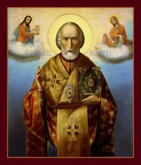

The Translation of St. Nicholas
(Greek Anonymous Account, 13th Century
Manuscript – Part 4)
“And immediately word was sent to the Archbishop
Ursus who at that time governed the See of Bari, to come with haste. For
several days previous he had been in the camp at Canusium (modern Canosa). But
nevertheless, when he was informed and heard the story, he went to Bari with
all speed, praising the Lord for what had happened. Then, entering the city, he
went straight to the holy and sacred remains, both to pay them homage, and also
to take possession of them with all zeal. And when the sailors and the townsmen
had learned this, they rushed with one accord to defend the holy remains. And
the Archbishop, therefore, when he had heard them, was vexed and did not know what
to do. And the men of Bari, as was fitting, sent prudent and wise men to him,
saying: ‘Do not do this, Father, but rather make haste to fulfill the will of
your spiritual children.’ But he not being moved to assent to their words, but
have devised and expedited a vicious scheme with his cohorts, planned to carry
off the venerable remains by force. And when the ambassadors returned with
empty hands and had made clear to all the archbishop’s plan, they seized arms
and began to sound the war cry. In the fighting that ensued there fell two of
the archbishop’s men and one of the townspeople, whose souls entered the halls
of the just.
“The large crowd of citizens immediately bore off
the venerable remains from the monastery of St. Benedict, singing ‘Kyrie eleison’
and other suitable and sacred hymns. And taking the remains from the gate of
the harbor, they brought them to the royal Praetorium and placed them in the
altar of St. Eustratius the great martyr.
And this altar, together with other sacred altars that were in the
Praetorium, was razed to the ground, in order to erect there the holy and
sacred altar of our inspired Father Nicholas, while the aforementioned leader
addressed them: ‘The holy archbishop Nicholas himself must be guarded by all
these sacred churches in our whole city. And lest anyone rob his holy remains,
let them be guarded carefully by us under arms, until his venerable and sacred
altar be finished.’
“Be it known therefore that St. Nicholas was
translated from Myra in Lycia eleven days before the Calends of May and entered
Bari on May 9 at the first evening of watch.
“Now I should like to tell you, beloved, how the
folk, running from the four corners of the city, gathered in his church,
suffering from various sicknesses. And there were cured that night and the
following morning fortyseven men, women and children. And one of these was
called Adralestus a man of noble and prominent family of the city of Bari, a
victim of a terrible disease; and another was Armenius who was lame on his left
side; and there were three epileptics, one deaf-mute, two with crippled arms,
two lepers, three paralytics (muoparetoi?): there was also a certain Pisanus
whose hands and feet were distorted. And many others were cured of whom I
cannot give a detailed account. On the third day the people came in droves from
all the environs to honor the sacred remains, as we have said. Among them seven
men were cured up until the fourth watch of the day. And from the fourth watch
till sunset fourteen others were cured. And on the fourth day twenty-nine
others who were suffering dreadfully were cured. And not only those who
suffered bodily ills obtained their health, but very many others who enjoyed
bodily integrity, received conversion and salvation of soul, of whom I am unable
to give a written account.
“And on the fifth day our loyal patron Nicholas appeared in a vision to a certain monk whose name was Mark, of the monastery of Celius, bidding him to go to Bari and tell the people not to lose heart concerning the occurrence of miracles. ‘For by the will of God I am leaving the Roman world; but whither I go, I go on a visit, but here I shall dwell forever.’ But as another proof that they might know, the following event occurred. Before sunrise that day a man was cured who was tormented by an evil and deaf and dumb spirit! On the sixth day the Archbishop of Bari with four other Bishops of neighboring cities, together with their retinues of clergy and lay and a huge throng all came to reverence the Saint, amid psalms and hymns and spiritual songs, justly honoring him who was honored and glorified by the Holy Trinity, and who in their last trials restores as citizens of heaven and equals of angels his servants and ministers.
“And we, after plaiting a crown of praises for the
Saint, shall bring this discourse to an end. Hail, O loyal patron and
intercessor for Christians! Hail, protector in perils and surest succor of
sailors! Hail, helper of those who invoke thee and provider of those who
importune thee for favors! Hail, peer of angels and companion of the holy
archbishops. Hail, shield of orphans and provider of widows! Hail, O thou, who
of old didst render fragrant Myra with the blossoms of thy miracles, and dost
now adorn Bari with the brilliant gleams of thy wonders! Hail, O thou who hast
enriched the land of Italy with thy lightning flashes and dispellest the gloom
of sickness and possession with the brightness of thy prodigies! Hail, and
truly hail, since thou art the champion most loyal in trust and the most speedy
intercessor of all who call on thee! Since thou hast access to the holy and
divine Trinity, deign to guide us in the way of virtue, and protecting us
unscathed and unharmed from the darts and snares of the enemy and overthrowing
all the arrogance and the overweening fraud of our visible enemies, may thou
grant us to accomplish this life without deception, leading us to that most
happy life hereafter, where the jubilant dwell in Christ Jesus our Lord.
Wherefore to Him be all glory, honor, and adoration with His eternal Father and
the allholy, good and vivifying Spirit, now and forever. Amen.”
Thought to Ponder:
Thought to Discuss around the Dinner Table:
The Translation of St. Nicholas
(Greek Anonymous Account, 13th Century
Manuscript – Part 4)
